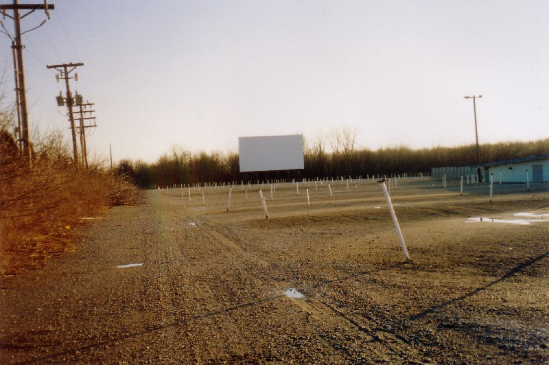
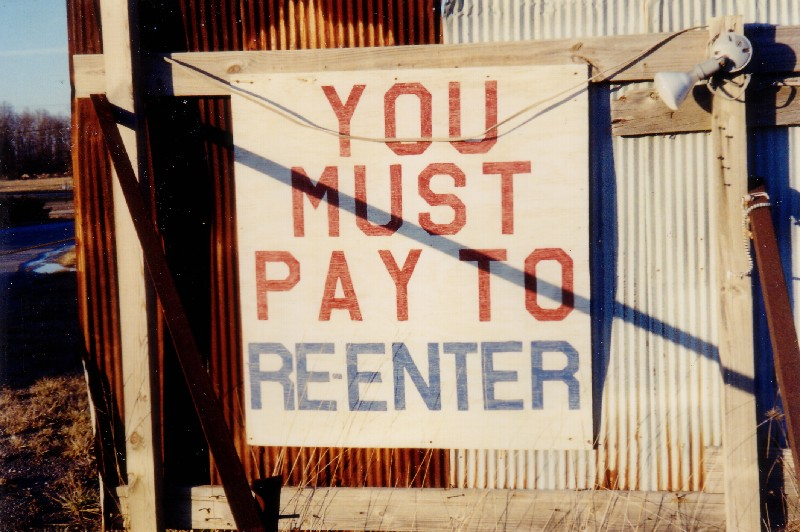

Not all drive-ins close because they can't pay the rent. The curse of running one is that even a prosperous theater may get bought out, given more money than they can turn down for suburban land far more valuable put to another use. This is happening in Columbus all the time, as the city continues its exponential sprawl in every direction. The Kingman Drive-In closed in 2001 when M/I Homes made the offer. Now Columbus has lost its next-to-last outdoor theater, the much loved 40 East Twin. This time the purchase came from next door: the Ohio Division of Fire training center.
The final movies were shown at the 40 East on August 14, 2003, bringing to a close almost forty years of operation. I visited the property on Route 40 outside Reynoldsburg in late October of that year and found both screens, the concession stand, and the ticket booths still standing--pretty much everyting but the marquee. This isn't the case anymore; sometime in 2004 the screens came down and pretty much all that's left now is the concession building.
When I was there the driveway was blocked off, but it was easy to drive around. I parked up near the cordoned-off box office and walked in. If the tire tracks in the mud are any indication, I wasn't the first.
The 40 East was, as its name indicates, a twin. The front screen was the bigger and sturdier of the two, with a row of bushes planted along the bottom to keep the highway lights from interfering with the movie. You can see it above. Below is Screen Two. The nice thing about a twin theater is that, if you don't like the movie you paid for, you can just drive over to the other one.
It wasn't so long ago that I was here with my ex, eating fried chicken and watching Malibu's Most Wanted. I also remember coming here with friends from work and watching Signs on Screen Two.
The concession stand was locked up tight when I was there. From what I understand, it's still there, so maybe the fire department will use it for something. In the summer they used to have a flea market here.
And, as you can tell, the vast majority of the speaker poles were still there, leaning in every direction from all the hits they've taken. The speakers were gone, but the speakers are always gone; even operating theaters remove them in the off-season, since so many people want one as a souvenir.
The Fire Department training center buts right up against the theater property, which is why they eventually decided to buy it out for $1.4 million. They conduct firefighter training courses there--the kind of thing where they set something on fire deliberately and have the trainees put it out. Sometimes they stage explosions. They did a good deal of this while movies were playing right across the low divider wall at the 40 East, which caused some disturbance among theater patrons. You can see here how close the two are to each other.
When the movie was over, you'd drive out through this opening in the fence. This was the only driveway not extensively blocked off by the new owners.
The entire place was in excellent shape when I was there (it had only been closed for two months), but its days were numbered.

Although I was too late to get any photos of the roadside marquee, I was able to find this next picture on the internet. As you can see, it's from back when movies were still showing there--not terribly long ago.
According to Skip Yassenoff, who owned this and the Kingman and still owns the South Twin, "There's no way to build a drive-in from scratch today, in my opinion." If you ask me, there will always be a market for at least a few, but there are metropolitan areas without a single one, and I can't think of an example of a new one opening. So everytime a 40 East disappears, it's a real loss. Before long you won't even be able to tell there was ever a theater on this spot.

Ohio's Forgotten Drive-Ins
The 40 East Twin
The Heath Drive-In
Hocking Theater Drive-In
Kingman Drive-In Theater
The Lake Drive-In
The Leatherwood Drive-In
The Linden Air Drive-In
The Show Boat Drive-In
The Skyline Drive-In

Back
Sources
Symansic, Tricia. "40 East Auto Theater to Close Later This Month." This Week. August 7, 2003.